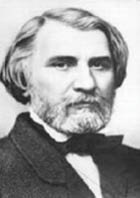

(1818 – 1883)

Rusya'nın ancak Slav kimliğini koruyarak kalkınabileceğini ileri süren Dostoyevski ile ömür boyu yıldızları barışmayan ve Batıcı anlayışların Rusya'yı geleceğe taşıyabileceğini düşünen Turgenyev, yazdığı "Babalar ve Oğullar" romanında tüm eski felsefelere ve kurumlara isyan eden nihilist karakter Bazarov'u anlatmıştı. Hayatının çoğunu Avrupa'da geçiren Turgenyev'i ölüm Paris'te yakaladı...
İvan Sergeyeyiç Turgenyev 9 Kasım[3] 1818'de, Rusya'nın Oryol şehrinde doğdu. Babası soylu bir ailedendi, fakat yoksul düşmüşlerdi. Süvari albayı baba Sergey Nikolayeviç Turgenyev, Spasskoye malikanesinin sahibi ve yaşlı bir kadın olan Varvara Petrovna Lutovina ile evlendi. Yüksek rütbeli bir asker olan babası öldüğünde İvan on altı yaşındaydı. İvan'la kardeşi Nikolay'ı, fazlasıyla otoriter bir kişiliği olan anneleri Varvara Petrovna Lutovinova büyüttü. Lutovinova okumuş, eğitime, kültüre düşkün fakat bir o kadar da sert bir kadındı; suç işleyen toprak kölelerini acımasızca cezalandırır, kırbaçlatırdı. Turgenyev'in kölelik karşıtı fikirleri bu yüzden küçük yaşta şekillenmeye başldı. Bir senelik Moskova Üniversitesi macerasının ardından Turgenyev, St. Petersburg Üniversitesi'nde klasikler, Rus edebiyatı ve filoloji eğitimi gördü. 1838'de tarih ve felsefe okumak üzere Berlin Üniversitesi'ne gitti. Avrupa'dan ülkesine radikal bir Batı yanlısı olarak döndü ve Rusya'nın gelişebilmek için yüzünü Batı'ya dönmesi ve kölelik gibi köhnemiş kurumların ortadan kaldırılması gerektiği yolundaki düşüncelerini dile getirmeye başladı.
O dönemde Alman felsefesi ülkede benimsenmediği ve kuşku ile karşılandığı için ders verme olanağına kavuşamadı. 1842 yılı, Turgenyev için dönüm noktası oldu. O sırada ünlü Rus eleştirmen Belinski ile tanıştı. Belinski'nin çevresi toprak köleliğine karşı duran aydın kesimdi. İlk yazınsal denemeleri dışında, Turgenyev'in ilk ciddi çalışmaları 1842'ye rastladı. Seçtiği yol Puşkin'in ortaya attığı ve Gogol'un geliştirdiği "gerçekçilik" akımıdır.
İlk önemli eseri, 1852'de kitap halinde yayımlanan ve köleliğin kötülüklerini anlattığı Bir Sporcunun Notları'dır. (Bir Avcının Notları adıyla da bilinir). 1850'lerin ikinci yarısından itibaren peş peşe yayımlanan kısa romanlarında Turgenyev'in gittikçe daha güçlü bir yazar haline geldiği görülür: Rudin (1856), Seçkin Evi (1859), Arefe (1860) ve Rusya'da yayılmaya başlayan devrimci görüşler hakkındaki Babalar ve Oğullar[4] (1862) bu dönemde yazdığı romanlardır. Hem son kitabının "nihilist" kahramanı Bazarov'a yönelik eleştiriler şiddetli bir hal aldığı hem de yaklaşık on beş senedir büyük bir aşkla bağlı olduğu ünlü şarkıcı Pauline Viardot'ya yakın olmak istediği için Rusya'yı terk etti ve hayatının geri kalanının çoğunu ülkesinden uzakta, Baden-Baden ve Paris gibi Avrupa şehirlerinde geçirdi. 1867'de Duman, 1877'de Bakir Toprak isimli romanları yayımlandı. O sıralarda Rusya'da özellikle Dostoyevski'nin edebi bayraktarlığını yaptığı Batı aleyhtarı Slav milliyetçiliği hâlâ Turgenyev'in temel meselelerinden biriydi. Ülkesindeki gelişmeleri uzaktan da olsa sürekli takip ediyordu. Ama yaşadığı her şeye rağmen soğukkanlı bir mesafeyi korumayı da başarabiliyordu. Daha sonra Ecinniler isimli romanındaki Karmazinov karakteri aracılığıyla kendisini ağır bir şekilde hicvedecek olan en büyük edebî ve fikrî düşmanı Dostoyevski hakkındaki bir mektubunda şu ifadeyi kullanıyordu: "Bazarov'umu ya da başka bir deyişle benim niyetlerimi en iyi anlayan kişilerden biri Dostoyevski'dir."
Turgenyev hiç evlenmedi. En yakın edebi arkadaşı Gustave Flaubert'ti. Ömrünün son yıllarında Rusya'daki şöhreti Tolstoy ve Dostoyevski gibi halefleri tarafından büyük ölçüde gölgelenmiş de olsa, Turgenyev Avrupa ve Amerika edebi çevrelerinde kabul gören ilk Rus yazarı olması ve "kısa roman" ve "lirik aşk hikayesi" türlerinin en parlak örneklerini vermiş olmasıyla hâlâ gelmiş geçmiş en büyük Rus yazarlarından biri olarak kabul edilir. İvan Turgenyev, 3 Eylül 1883'te Paris yakınlarındaki Bougival'de öldü. Ölmeden önceki arzusu uyarınca naaşı Rusya'ya götürüldü ve Saint Petersburg'da, arkadaşı Belinski'nin mezarının yanına gömüldü.
Seçme Romanları: Rudin (1857; Rudin – İlk Aşk – İlkbahar Selleri, İş Bankası Yayınları, 2009), Asilzade Yuvası (1859 – Turkuvaz Kitap, 2008), Arefe (1860 – İletişim Yayınları, 1991), Babalar ve Çocuklar (1862), Bakir Toprak (1876)